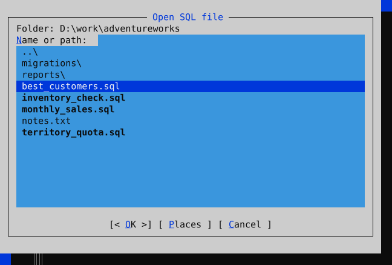
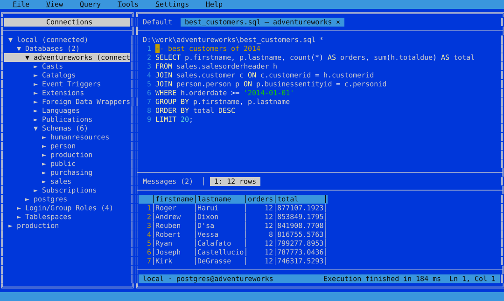
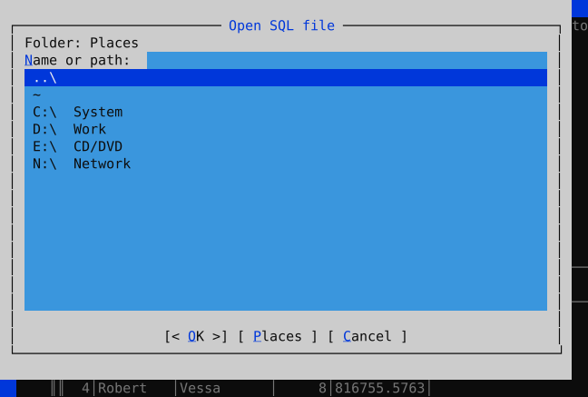
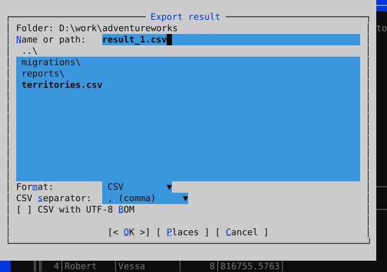

SQL files and result export
Loading SQL scripts into query tabs and saving them, the file dialog shared by all file commands, and exporting a result set — all of its rows, not only the fetched ones — as CSV, JSON or XML.
All paths are client-side. pgtc reads and writes files in the file system of the host
it runs on, never on the database server (unlike server-side COPY … TO 'file'). When pgtc
runs on a remote host over SSH, the files are on that host, not on the workstation.
Opening a SQL file
- In the tree, put the cursor on the target database (or on any object below it). The new tab opens its session on that database.
- Choose (also in the context menu of the tree, F2).
- Pick the file in the file dialog and press Enter.

.sql files are highlighted.The file is loaded into a new query tab named after the file. Nothing is executed. Reading runs in the background: the status line shows Opening …, the UI stays usable, and the tab appears when the file is read.
- The file must be valid UTF-8 (a leading byte-order mark is accepted and dropped). pgtc does not convert
encodings; a file that is not valid UTF-8 — a LATIN1 or WIN1250 dump, for example — is rejected with an
error. The sessions always use
client_encoding = UTF8. - There is no size limit in practice — see Large scripts. Remember that
F5 sends the whole text as one request (Scripts), and that psql
meta-commands in a dump (
\connect,\.data blocks ofCOPY … FROM stdin) are not interpreted. - Without a database selected in the tree, the command is disabled.
Saving

* means there are changes that are not saved yet.| Command | Key | Action |
|---|---|---|
| Ctrl+S | A tab with a file: writes the editor text to that file — no dialog, no confirmation. The status line says Saved …. A tab without a file: the same as Save as. | |
Always opens the file dialog, in the folder of the tab's file and with its name filled in (a tab without a file: query.sql). Afterwards the tab is bound to the new file. |

- Save as asks before it overwrites an existing file.
- Files are written as UTF-8 without a byte-order mark. Always the whole editor text is written, also when there is a selection.
- The write is atomic: the text goes to a temporary file
name.tmpin the same folder, is flushed to disk, and is then renamed over the target, so a crash or a full disk leaves the old file intact. An existing file keeps its permissions; a symbolic link is followed. In a folder where no temporary file can be created, the file is written in place. - Saving runs in the background (Saving …); typing can continue. Text changed while the file was being written leaves the tab marked as modified.
- Ctrl+S saves while the focus is in the editor or in the results. In the object tree the same key is quick search.
- Both commands are available only in a query tab.
A path that is too long for the file bar is shortened from the left: …\reports\best_customers.sql.
Closing a tab with unsaved changes asks whether to save them — see Closing a query tab. The file is independent of the session: saving does not commit anything, and an open transaction is asked about separately.
The file dialog
One dialog serves every file command: opening and saving SQL files, exporting a result, exporting and loading a
database definition (.pgdef). It is modelled on the one in Midnight Commander.
| Part | Content |
|---|---|
| Folder: | The directory listed below. |
| Name or path | An input for a file name or a path. |
| The list | .. (the parent directory), then the directories — with a trailing \ or / — then the files. Files with the extension the command expects are highlighted. |
| OK, Places, Cancel | Buttons. OK takes whichever was used last: the row selected in the list, or the text of the input. |
Choosing with the list
- Press Tab to move from the input to the list (or click into it).
- Move with Up / Down / PgUp / PgDn / Home / End.
- Enter — or a double click — on a folder opens it; on
..goes up; on a file chooses it. So does clicking a row and then OK.
Typing a name or a path
Type into Name or path and press Enter:
| Input | Resolved as |
|---|---|
report.sql | A file in the listed directory. |
reports/2026/q3.sql, ../other/x.sql | A path relative to the listed directory. |
D:\work\x.sql, /home/me/x.sql, \\server\share\x.sql | An absolute path. |
~, ~/sql/x.sql | The home directory of the OS user — on every platform, Windows included. |
D: | Windows: the root directory of drive D. |
- A path that names a directory changes to it; the dialog stays open.
- A path that names a file (or, when saving, a new name) is opened or saved.
- If the parent directory of the path does not exist, an error is shown and the dialog stays open. pgtc does not create directories.
- When saving, no extension is appended: type
report.sql, notreport.
Places: drives and other starting points

Press Alt+P (the Places button). The list now shows starting points instead of a directory, and the Folder: line says Places:
~— the home directory;- the folder of the current tab's file, if the tab has one;
- Windows: every drive with its label (
C:\ System); network drives are marked Network, CD/DVD drives CD/DVD;
Linux:/, then the entries under/media/<user>,/run/media/<user>and/mnt;
macOS:/, then the volumes under/Volumes.
Enter or a double click opens a place; .. returns to the previous directory. On Windows,
.. in the root directory of a drive also leads to the places — the way to change the drive without
typing.
Where the dialog starts
The first file dialog of a pgtc run opens in the user's documents folder (not in the process's working directory). After that, every file dialog opens where the last one was. The location is not persisted across runs.
Directories are listed in the background: the dialog appears at once and shows Reading… until the listing arrives, so a slow network share does not block the UI.
Exporting a result
Any result set of a query tab can be written to a file as CSV, JSON or XML. The export is
done by pgtc from the rows of the already executed statement; it is not COPY and needs no privileges
beyond those of the query.
- Execute the query and select the result set to export (if there are several).
- Choose — or, in the grid, F2 and .
- Choose the directory and the name as in every file dialog. The proposed name is
result_1.csv(the number of the result set). - Choose the Format; the extension of the name follows it. For CSV, choose the CSV separator and whether to write a BOM.
- Press Enter on OK. An existing file is overwritten only after confirmation.

Format, separator and BOM choice are stored in the settings and proposed for the next export.
The whole result — not only what the grid shows
The export always contains every row of the result set, also when the grid has fetched only the first batch of 1,000. pgtc writes the rows already loaded, then resumes reading the paused result and streams the remaining rows directly to the file. The statement is not executed again — the file is consistent with the grid, from the same snapshot — and the rows are never held in memory, so a result of many millions of rows can be exported.
- While it runs, the status line counts the rows written and the tab status row says Exporting….
- Alt+Shift+C cancels. A cancelled or failed export removes its incomplete file and reports the reason.
- Afterwards the grid still shows the rows it had loaded, and its label says, for example,
1,000 of 1,234,567 rows (rest exported): the remaining rows went to the file, not to the grid. The statement has then completed on the server; its snapshot and locks are released as after Fetch all. - While an export runs, the tab's session is busy: nothing else can be executed in the tab.
- Values are written in the server's text output format, as the grid shows them; they depend on session
settings such as
DateStyle,IntervalStyle,bytea_outputandextra_float_digits.
CSV
territoryid,name,countryregioncode,salesytd
1,Northwest,US,7887186.7882
6,Canada,CA,6771829.1376
7,France,FR,4772398.3078| Property | Written as |
|---|---|
| Header | One line with the column names of the result set. |
| Separator | , (default), ; or a tab character — chosen in the dialog. |
| Quoting | RFC 4180: a field is enclosed in "…" only when it contains the separator, a double quote or a line break; an embedded double quote is doubled (""). |
| NULL | An empty field — not distinguishable from an empty string (unlike COPY … CSV, which writes an empty string as ""). |
| Line ends | CR LF. |
| Encoding | UTF-8, with a leading BOM if CSV with UTF-8 BOM is checked. |
For Excel: check CSV with UTF-8 BOM; without it Excel reads the file
in the ANSI code page and non-ASCII characters (č, š, ž, ü) are garbled. Where the Windows locale uses the comma as
decimal separator (most of Europe), Excel expects ; as list separator: choose it, and the file opens in
columns on a double click.
JSON
[
{"territoryid": 1, "name": "Northwest", "countryregioncode": "US", "salesytd": 7887186.7882},
{"territoryid": 6, "name": "Canada", "countryregioncode": "CA", "salesytd": 6771829.1376}
]An array with one object per row; the keys are the column names. The JSON type of a value follows the data type (type OID) of its column:
| Column type | In JSON |
|---|---|
int2, int4, int8, oid, float4, float8, numeric | A number: the digits of the server's text output, copied unchanged — no conversion through a binary float, so numeric and int8 keep full precision in the file (the reader's JSON parser may still round). NaN, Infinity and -Infinity are not JSON numbers and are written as strings. |
bool | true / false |
json, jsonb | Embedded as a JSON value, not as a string. |
| SQL NULL | null |
Every other type (text, timestamptz, uuid, money, bytea, arrays, composites, domains, …) | A string with the server's text output of the value. |
Duplicate column names in a result set (SELECT 1 AS a, 2 AS a) are made unique: the second key
becomes a_2, so no value is lost.
XML
<?xml version="1.0" encoding="UTF-8"?>
<result>
<columns><column name="territoryid"/><column name="name"/></columns>
<row><value>1</value><value>Northwest</value></row>
<row><value>6</value><value null="true"/></row>
</result>- The column names are listed once, as attributes in
<columns>(a column name need not be a valid XML element name); each<row>has one<value>per column, in the same order. - SQL NULL is
<value null="true"/>— distinct from an empty string,<value></value>. <,>and&are escaped. All values are text; there is no typing as in JSON.- XML 1.0 forbids most control characters (U+0001–U+0008, U+000B, U+000C, U+000E–U+001F), even as character
references. A value containing one is written base64-encoded and marked
encoding="base64", so the file stays well-formed and no data is lost.
Other ways to get data out
- A few values: Ctrl+C in the grid copies the cell; Ctrl+A then Ctrl+C copies the loaded rows, tab-separated with a header row.
- Server-side:
COPY (query) TO 'file'executed in a query tab writes on the database server and needs superuser or membership inpg_write_server_files.COPY … TO STDOUTis not supported. - The schema of a database (DDL, no data): Database definition.